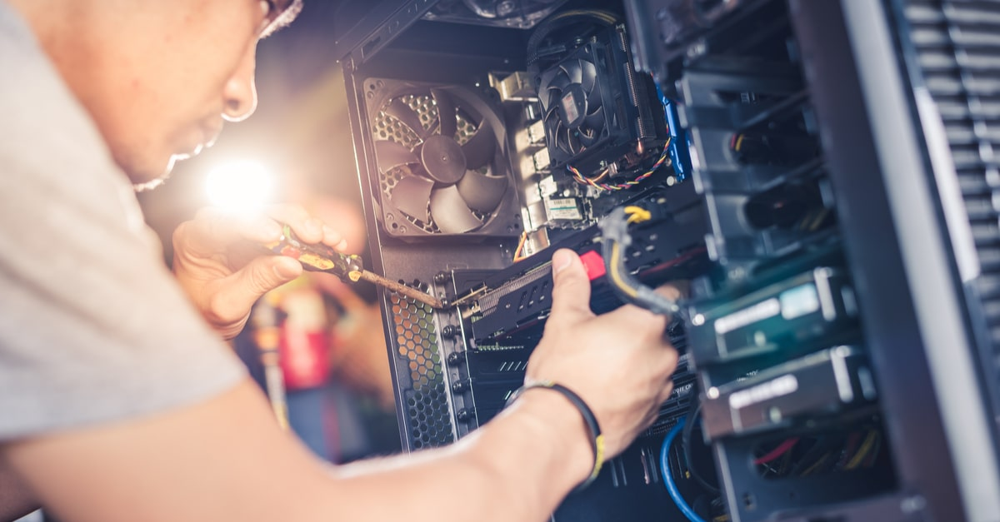

Sobre
Somos uma companhia de monitoramento de computadores para empresas do ramo de call
center.
Mais do que uma empresa comum, nos preocupamos com a qualidade de nosso serviço.
Trazemos para nossos clientes a segurança e confiança de que não precisam se preocupar, nós
estaremos lá para ajudar.


A Monitor Mind é especializada em desenvolver soluções de monitoramento de hardware de computadores para ajudar o suporte técnico do call center a garantir que seus sistemas estejam sempre operando com eficiência e segurança.
Nosso objetivo é oferecer aos clientes uma maneira fácil e eficiente de identificar e resolver problemas de hardware, melhorando o tempo de resposta e a qualidade do atendimento ao cliente.